Model testing
The Matlab function das3test.m contains code for testing of the model. As a user of the model, you may want to test the model to verify that it works as it should, or you may want to see the effect of a change in model parameters in a well-defined test rather than in a real-time simulation.
Contents
Visualization test
The model is placed in a state where all joint angles (q) are zero, the forward kinematic model is executed and the resulting pose is visualized. The result should be Figure 1. You can use the zoom and rotate tools at the top of the Figure window for a closer inspection.
At this point, the user is asked to press the Enter key to successively more all joints. This is shown for the first two DOFs in figure 6. The visualization test verifies that the kinematic model is coded correctly.
To execute this test, type:
das3test('vis')
***************************************************** * DAS3MEX * * (c) 2010-2012 Case Western Reserve University * ***************************************************** Initializing... Visualization test...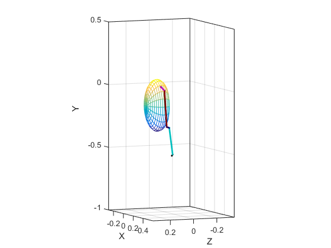
Hit ENTER to move SC_y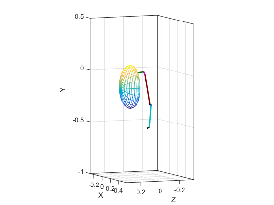
Hit ENTER to move SC_z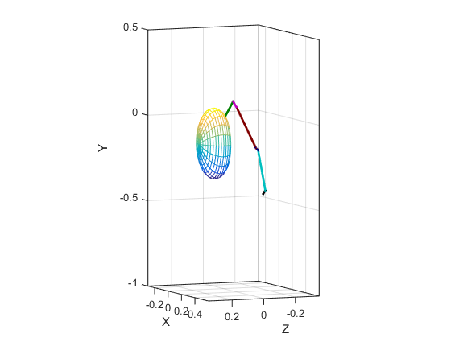
Hit ENTER to move SC_x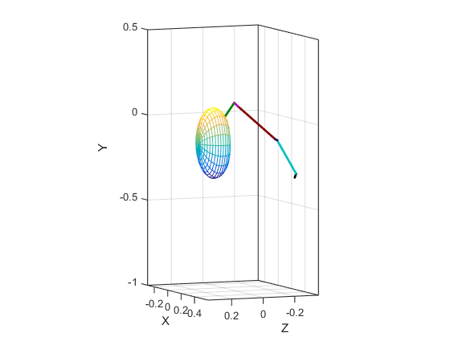
Hit ENTER to move AC_y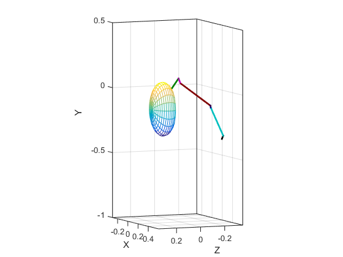
Hit ENTER to move AC_z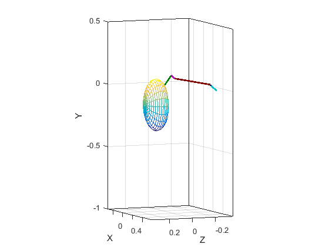
Hit ENTER to move AC_x
Hit ENTER to move GH_y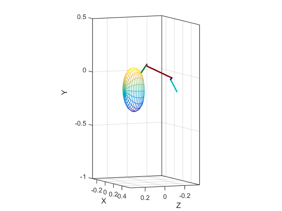
Hit ENTER to move GH_z
Hit ENTER to move GH_yy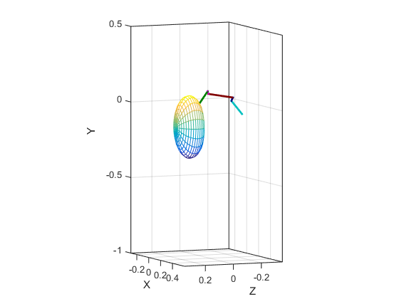
Hit ENTER to move EL_x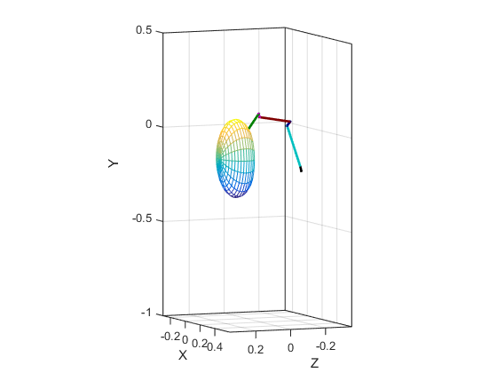
Hit ENTER to move PS_y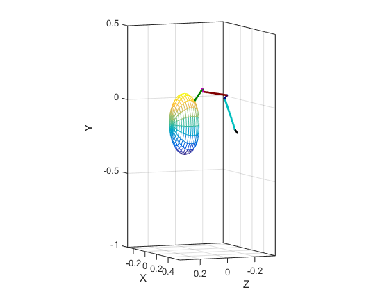
Figure 1: Result of visualization test.
Speed test
During this test, the MEX function that contains the model dynamics is executed many times with random inputs, and the time per execution is reported on the screen.
It is best to do this when no other process is running on the computer.
To execute this test, type:
das3test('speed')
***************************************************** * DAS3MEX * * (c) 2010-2012 Case Western Reserve University * ***************************************************** Initializing... Speed test... Computation time for each model evaluation: 1.66 ms Computation time with muscle dynamics and no multibody dynamics: 0.13 ms
The second line reports the computation speed that is due to only the muscle and joint models, without multibody dynamics. This shows that the computation time is mostly due to the multibody dynamics.
Moment arm test
This test verifies that the muscle path models are working correctly. Each joint angle is set at the midpoint of its range of motion, all muscle moment arms are calculated, and at each joint, the muscle with the largest positive or negative moment arm is reported.
To execute this test, type:
das3test('moment arms')
***************************************************** * DAS3MEX * * (c) 2010-2012 Case Western Reserve University * ***************************************************** Initializing... Moment arm test... DOF Largest positive moment arm Largest negative moment arm ---- ----------------------------- ----------------------------------- SC_y 132.1 mm (serr_ant_3 ) -120.3 mm (trap_scap_7 ) SC_z 116.9 mm (trap_scap_2 ) -200.1 mm (lat_dorsi_4 ) SC_x 164.9 mm (serr_ant_1 ) -87.1 mm (rhomboid_2 ) AC_y 58.8 mm (lat_dorsi_1 ) -118.2 mm (lev_scap_2 ) AC_z 148.8 mm (serr_ant_2 ) -163.8 mm (rhomboid_5 ) AC_x 68.7 mm (serr_ant_6 ) -62.5 mm (pect_min_3 ) GH_y 31.8 mm (pect_maj_t_3 ) -17.7 mm (delt_scap_3 ) GH_z 28.3 mm (delt_scap11 ) -73.7 mm (ter_maj_2 ) GH_yy 20.4 mm (subscap_8 ) -14.9 mm (ter_min_3 ) EL_x 81.6 mm (brachiorad_1 ) -19.7 mm (tric_lat_1 ) PS_y 8.7 mm (pron_quad_3 ) -17.3 mm (supinator_1 )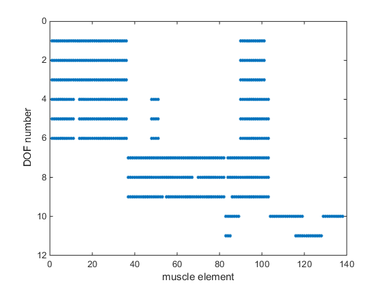
Figure 2: Moment arm matrix generated by das3test('moment arms').A figure will show the nonzero elements of the moment arm matrix (Figure 2). The moment arm matrix, with the names of the degrees of freedom and muscles, and moment arms in mm, is also written on the file momentarms.csv which can be examined in Excel or other spreadsheet software.
Equilibrium test
This test finds the passive equilibrium of the model. Equilibrium implies that the state derivatives dx/dt are zero. Passive implies that the muscle excitations u are zero.
The solution is found by an iterative solver. When the equilibrium is found, Matlab reports joint variables, muscle variables and glenohumeral stability for this equilibrium.
In addition, the linearized dynamics are examined at equilibrium, by eigenvalue analysis. The magnitude of the eigenvalues tells us how fast the dynamics are. If there are eigenvalues with a magnitude of 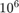, which corresponds to a microsecond time scale, this means that the differential equation is stiff and requires implicit methods for simulation. The real parts of all eigenvalues have to be negative for the equilibrium to be stable.
To execute this test, type:
das3test('equilibrium')
***************************************************** * DAS3MEX * * (c) 2010-2012 Case Western Reserve University * ***************************************************** Initializing... Equilibrium test... Equilibrium eval # 1: Norm of f: 1.79963e-12 Equilibrium eval # 2: Norm of f: 3.30170e-12 Equilibrium eval # 3: Norm of f: 3.30164e-12 Equilibrium eval # 4: Norm of f: 4.26102e-12 Equilibrium eval # 5: Norm of f: 4.26102e-12 Equilibrium eval # 6: Norm of f: 4.26108e-12 Equilibrium eval # 7: Norm of f: 4.26401e-12 Equilibrium eval # 8: Norm of f: 4.26401e-12 Equilibrium eval # 9: Norm of f: 4.26401e-12 Equilibrium eval # 10: Norm of f: 2.61000e-12 Equilibrium eval # 11: Norm of f: 2.62967e-12 Equilibrium eval # 12: Norm of f: 2.58002e-12 Equilibrium eval # 13: Norm of f: 2.59973e-12 Equilibrium eval # 14: Norm of f: 2.59973e-12 Equilibrium eval # 15: Norm of f: 3.35742e-12 Equilibrium eval # 16: Norm of f: 3.83374e-12 Equilibrium eval # 17: Norm of f: 3.91520e-12 Equilibrium eval # 18: Norm of f: 3.07880e-12 Equilibrium eval # 19: Norm of f: 3.07880e-12 Equilibrium eval # 20: Norm of f: 3.07880e-12 Equilibrium eval # 21: Norm of f: 3.07880e-12 Equilibrium eval # 22: Norm of f: 3.07880e-12 Equilibrium eval # 23: Norm of f: 3.07880e-12 Equilibrium eval # 24: Norm of f: 3.07880e-12 Equilibrium eval # 25: Norm of f: 3.07880e-12 Equilibrium eval # 26: Norm of f: 3.07880e-12 Equilibrium eval # 27: Norm of f: 3.07880e-12 Equilibrium eval # 28: Norm of f: 3.07880e-12 Equilibrium eval # 29: Norm of f: 1.79963e-12 Norm of f was: 1.7996e-12 This must be close to zero, otherwise it is not an equilibrium Equilibrium state was stored on equilibrium.mat Equilibrium posture was stored on eq_position.sto -------------Equilibrium state------------- DOF angle(deg) ang.vel(deg/s) moment(Nm) --------------- -------------- -------------- -------------- SC_y -21.246 -0.000 4.043 SC_z 7.551 -0.000 -12.569 SC_x 12.761 -0.000 26.385 AC_y 35.555 -0.000 -12.303 AC_z -24.940 -0.000 40.659 AC_x -17.947 -0.000 18.458 GH_y 24.878 0.000 -0.044 GH_z 28.549 0.000 1.374 GH_yy 15.642 -0.000 -0.219 EL_x 37.638 -0.000 0.651 PS_y 81.441 -0.000 0.040 ---------Muscle variables at equilibrium--------- Muscle Lce/Lceopt Active state Force(N) --------------- ------------ ------------ ------------ trap_scap_1 1.224 -0.000 19.122 trap_scap_2 1.120 0.000 7.820 trap_scap_3 0.855 -0.000 -0.155 trap_scap_4 0.813 -0.000 -0.178 trap_scap_5 0.863 -0.000 -0.127 trap_scap_6 0.942 -0.000 -0.052 trap_scap_7 1.003 0.000 0.005 trap_scap_8 1.165 -0.000 12.104 trap_scap_9 1.270 -0.000 28.915 trap_scap10 1.253 -0.000 16.842 trap_scap11 1.372 -0.000 41.133 trap_clav_1 0.894 0.000 -0.165 trap_clav_2 0.844 -0.000 -0.262 lev_scap_1 0.860 -0.000 -0.221 lev_scap_2 0.801 -0.000 -0.259 pect_min_1 0.834 -0.000 -0.127 pect_min_2 0.869 -0.000 -0.143 pect_min_3 0.805 -0.000 -0.210 pect_min_4 0.849 -0.000 -0.208 rhomboid_1 0.807 -0.000 -0.191 rhomboid_2 0.878 -0.000 -0.131 rhomboid_3 0.757 -0.000 -0.306 rhomboid_4 0.665 -0.000 -0.424 rhomboid_5 0.590 0.000 -0.480 serr_ant_1 1.106 0.000 2.373 serr_ant_2 1.182 -0.000 11.894 serr_ant_3 1.258 0.000 22.699 serr_ant_4 1.479 0.000 81.191 serr_ant_5 1.415 0.000 35.743 serr_ant_6 1.252 0.000 20.002 serr_ant_7 1.012 0.000 0.035 serr_ant_8 1.110 0.000 3.028 serr_ant_9 0.969 -0.000 -0.025 serr_ant10 0.835 -0.000 -0.109 serr_ant11 0.775 -0.000 -0.199 serr_ant12 0.695 -0.000 -0.289 delt_scap_1 1.017 0.000 0.417 delt_scap_2 0.969 -0.000 -0.026 delt_scap_3 0.986 -0.000 -0.009 delt_scap_4 1.076 0.000 2.382 delt_scap_5 1.071 0.000 2.183 delt_scap_6 1.013 -0.000 0.276 delt_scap_7 1.035 0.000 0.746 delt_scap_8 1.007 0.000 0.082 delt_scap_9 0.994 -0.000 -0.002 delt_scap10 0.930 -0.000 -0.049 delt_scap11 0.961 -0.000 -0.026 delt_clav_1 1.350 0.000 51.119 delt_clav_2 0.730 -0.000 -0.247 delt_clav_3 0.745 -0.000 -0.204 delt_clav_4 1.156 0.000 9.188 coracobr_1 1.013 -0.000 0.111 coracobr_2 1.017 0.000 0.153 coracobr_3 1.015 -0.000 0.098 infra_1 0.932 -0.000 -0.043 infra_2 0.978 0.000 -0.016 infra_3 0.993 -0.000 -0.004 infra_4 1.042 0.000 -0.040 infra_5 1.138 -0.000 -0.043 infra_6 1.025 -0.000 -0.056 ter_min_1 1.225 -0.000 -0.037 ter_min_2 1.327 -0.000 -0.040 ter_min_3 1.326 0.000 -0.037 ter_maj_1 0.904 -0.000 -0.135 ter_maj_2 0.918 -0.000 -0.131 ter_maj_3 0.895 0.000 -0.160 ter_maj_4 0.833 -0.000 -0.182 supra_1 1.228 0.000 6.371 supra_2 1.093 0.000 3.139 supra_3 0.972 -0.000 -0.016 supra_4 0.972 0.000 -0.016 subscap_1 0.819 -0.000 -0.100 subscap_2 0.858 -0.000 -0.092 subscap_3 0.814 0.000 -0.122 subscap_4 0.843 0.000 -0.113 subscap_5 0.773 0.000 -0.181 subscap_6 0.868 -0.000 -0.101 subscap_7 0.797 0.000 -0.166 subscap_8 0.786 -0.000 -0.164 subscap_9 0.825 -0.000 -0.126 subscap10 0.826 0.000 -0.118 subscap11 0.742 -0.000 -0.166 bic_l 1.147 -0.000 -0.197 bic_b_1 1.356 -0.000 -0.168 bic_b_2 1.411 -0.000 -0.217 tric_long_1 1.323 -0.000 -0.166 tric_long_2 1.344 -0.000 -0.126 tric_long_3 1.272 -0.000 -0.136 tric_long_4 1.130 -0.000 -0.086 lat_dorsi_1 0.722 0.000 -0.651 lat_dorsi_2 0.756 -0.000 -0.698 lat_dorsi_3 0.752 -0.000 -0.731 lat_dorsi_4 0.791 0.000 -0.670 lat_dorsi_5 0.822 -0.000 -0.556 lat_dorsi_6 0.749 -0.000 -0.853 pect_maj_t_1 0.849 -0.000 -0.285 pect_maj_t_2 0.914 -0.000 -0.158 pect_maj_t_3 0.895 -0.000 -0.194 pect_maj_t_4 0.951 -0.000 -0.090 pect_maj_t_5 1.137 -0.000 8.197 pect_maj_t_6 0.993 -0.000 -0.010 pect_maj_c_1 1.093 -0.000 5.039 pect_maj_c_2 0.977 -0.000 -0.025 tric_med_1 1.110 -0.000 -0.119 tric_med_2 1.146 -0.000 -0.119 tric_med_3 1.223 -0.000 -0.106 tric_med_4 1.130 -0.000 -0.120 tric_med_5 1.109 0.000 -0.073 brachialis_1 1.152 0.000 -0.042 brachialis_2 1.175 0.000 -0.024 brachialis_3 1.102 0.000 0.003 brachialis_4 1.363 -0.000 -0.028 brachialis_5 1.287 0.000 -0.008 brachialis_6 1.149 0.000 -0.024 brachialis_7 1.279 0.000 -0.013 brachiorad_1 1.251 -0.000 0.332 brachiorad_2 1.199 -0.000 -0.001 brachiorad_3 1.367 0.000 0.826 pron_teres_1 1.281 0.000 -0.012 pron_teres_2 1.062 0.000 1.726 supinator_1 0.847 -0.000 -0.041 supinator_2 0.944 -0.000 -0.066 supinator_3 1.158 -0.000 -0.036 supinator_4 1.103 -0.000 -0.025 supinator_5 1.185 -0.000 -0.031 pron_quad_1 1.192 -0.000 1.991 pron_quad_2 1.037 -0.000 0.807 pron_quad_3 0.993 0.000 -0.003 tric_lat_1 1.073 -0.000 -0.096 tric_lat_2 1.042 -0.000 -0.118 tric_lat_3 1.031 -0.000 -0.100 tric_lat_4 0.999 -0.000 -0.117 tric_lat_5 0.849 0.000 -0.062 anconeus_1 0.863 0.000 -0.035 anconeus_2 0.879 -0.000 -0.016 anconeus_3 1.019 -0.000 0.032 anconeus_4 0.891 -0.000 -0.014 anconeus_5 0.785 -0.000 -0.029 -----------Other variables--------------- Force in glenohumeral joint: -18.3646 29.2334 18.0681 Glenohumeral stability value: -0.2234 Contact force in Trigonum Spinae of the scapula: 83.2593 123.6619 217.9835 Contact force in Inferior Angle of the scapula: 42.9447 28.3786 211.3670 Thorax surface equation solved for Trigonum Spinae of the scapula: -0.0231 Thorax surface equation solved for Inferior Angle of the scapula: -0.0132 ----------------Stability analysis---------------- Eigenvalues with largest real part (s^-1): (must all be negative for stability) -1.0838 -1.1769 -1.3227 -1.3227 -1.9228 Smallest time constants (s): 1.8509e-06 1.9748e-06 2.3240e-06 3.2712e-06 3.4194e-06 The imaginary parts, representing (damped) oscillatory behavior, have a maximum of ~7374, which is equivalent to a frequency (f=omega/2pi) of 1173.6 Hz.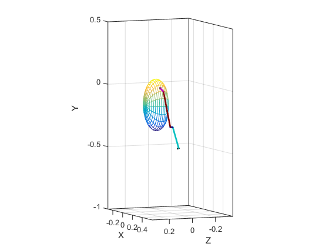 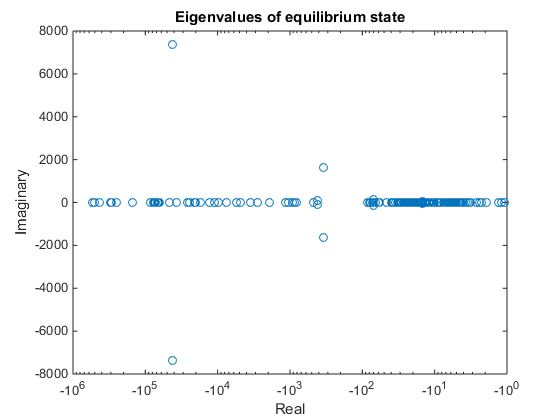
Figure 3: Passive equilibrium posture and eigenvalues of the dynamic model. Note the logarithmic real axis.
Note that this is for a passive equilibrium state. The eigenvalues will probably be larger when muscles are generating force and tendons contribute to joint stiffness.
Simulation test with real-time solver
The system is simulated with the first-order Rosenbrock solver. This is a fixed-step solver that is suitable for real-time.
At t=0, the model is in its equilibrium state, which is obtained from the file equilibrium.mat. It is therefore important that you have first done the equilibrium test with the same model. The muscle excitations u are then ramped up to reach a maximum (1.0) at t=0.5.
To execute this test, type:
>> das3test(‘simulate’, stepsize)
If stepsize is omitted, a stepsize of 0.003 seconds is used. When the simulation is completed, it displays the result and writes the result in files simulation.mat (full state x as function of time) and simulation.sto (skeleton pose q as function of time, for animation with Opensim).
The results of this simulation are compared to the results from the ode15s test. It is therefore important that test(‘ode15s’) has already been completed with the same model. (The results of ode15s are included in the release: ode15s_simulation.mat (full state x as function of time) and ode15s_simulation.sto (q as function of time, to visualize simulated movement in OpenSim). Differences are reported as RMS error in each joint angle.
das3test('simulate')
*****************************************************
* DAS3MEX *
* (c) 2010-2012 Case Western Reserve University *
*****************************************************
Initializing...
Simulating arm movements...
CPU time per time step: 2.278 ms
Simulation speed is 1.314 times faster than real time
Simulation result has been saved in simulation.mat
Simulated motion has been saved in simulation.sto
RMS errors in each joint angle (deg):
SC_y : 0.064
SC_z : 0.042
SC_x : 0.013
AC_y : 0.006
AC_z : 0.016
AC_x : 0.011
GH_y : 0.110
GH_z : 0.057
GH_yy : 0.038
EL_x : 0.029
PS_y : 0.140
Overall RMS error: 0.063 degrees
ans =
0.0629
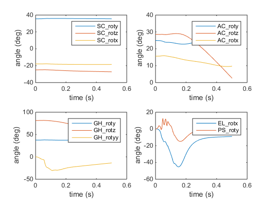 The rest of the tests are quite slow (an hour or more) so please allow enough time.
Simulation test with Matlab solver
The system can be simulated with a Matlab differential equation solver. This is slow, but we know it is accurate because the Matlab solver will control its time steps to remain below the specified error tolerance. Because it is a stiff system, we use the ode15s solver which is an implicit variable step method.
At t=0, the model is in its equilibrium state, which is obtained from the file equilibrium.mat. It is therefore important that you have first done the equilibrium test with the same model. The muscle excitations u are then ramped up to reach a maximum (1.0) at t=0.5.
To execute this test, type:
>> das3test(‘ode15s’)
At each time step of the simulation, the state derivative 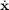 will be solved numerically, which is time consuming. Due to the variable step, computation time is unpredictable (this is why this solver is not suitable for real time) and can be several minutes up to an hour. At regular intervals, the test will report its progress, and some verification that the condition f=0 is being maintained:
Step 784511: Neval = 1202744 -- t = 2.8126797952592 -- Norm(f) = 2.197e-016
The simulated movements are reported as graphs (Figure 4) and also saved in files ode15s_simulation.mat (full state x as function of time) and ode15s_simulation.sto (q as function of time, to visualize simulated movement in OpenSim).
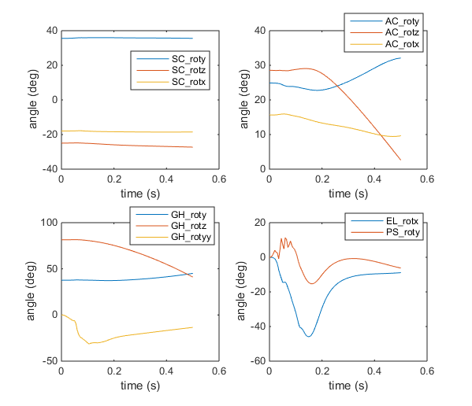
Figure 4: Result of movement simulation test.
To see the simulated movement in OpenSim: (1) Start OpenSim, (2) File->Open Model..., select the model das3.osim, (3) File->Load Motion..., select the motion file ode ode15s_simulation.sto. Then use the playback controls in top right of window to show the movement.
Isometric muscle tests
This test produces isometric moment-angle curves (figure 5) for a joint, one for each value in a range of angles in a second joint.
To execute this test, type:
>> das3test('isometric')
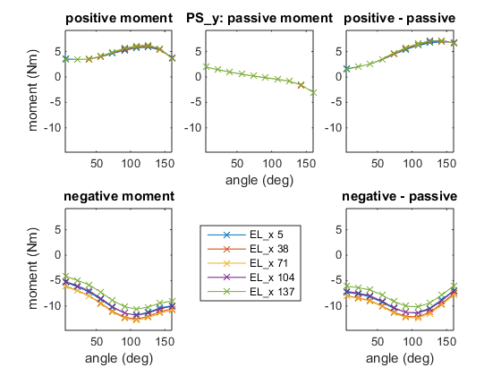
Figure 5: Isometric moment-angle curves for forearm pronation/supination, one for each value in a range of angles of elbow flexion/extension
You can also produce one isometric moment-angle curve (figure 6) for each muscle that crosses a joint.
To execute this test, type:
>> das3test('isometric1')
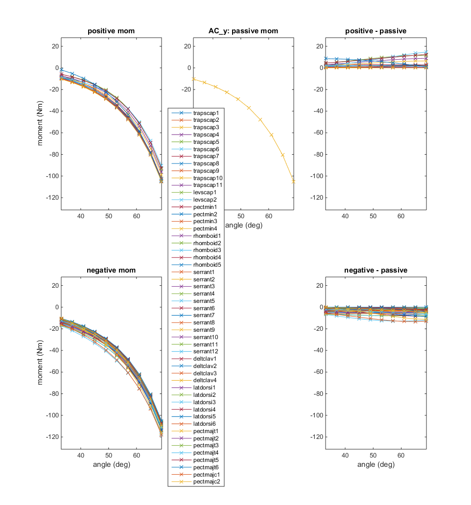
Figure 6: Isometric moment-angle curve for all muscles crossing ACy
Isokinetic muscle test
This test produces isokinetic moment-angular velocity curves for a joint.
To execute this test, type:
>> das3test('isokinetic')
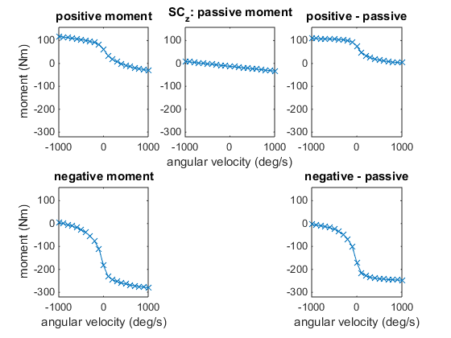
Figure 7: Isokinetic moment-angular velocity curve for SCz
Previous: Model reference
Home: Main